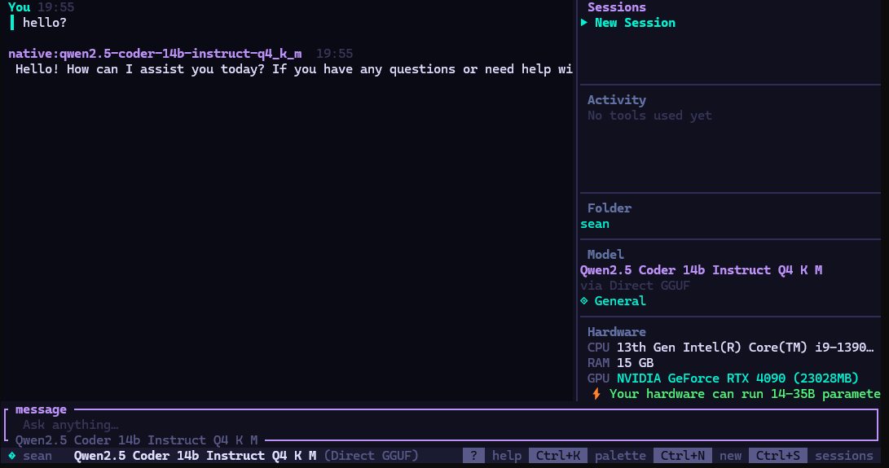
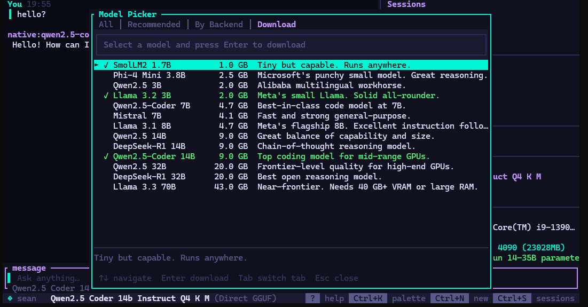
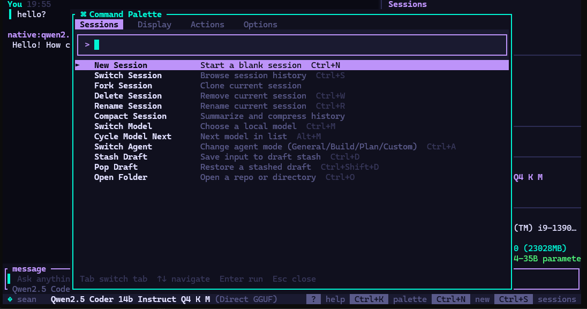

___ ___ .____ .__ __ / | \ ___.__.______ ___________| | |__|/ |_ ____ / ~ < | |\____ \_/ __ \_ __ \ | | \ __\/ __ \ \ Y /\___ || |_> > ___/| | \/ |___| || | \ ___/ \___|_ / / ____|| __/ \___ >__| |_______ \__||__| \___ > \/ \/ |__| \/ \/ \/
No API keys. No usage tracking. No network after the initial model download. Everything runs on your hardware.
TUI visible in milliseconds. Sessions load instantly. Streamed tokens hit the screen with no runtime overhead.
The model reads files, edits code, runs shell commands, searches the web, and chains multi-step tasks inside the terminal.
llamafile auto-managed, or connect to llama.cpp, LM Studio, Ollama, KoboldCpp, LocalAI, vLLM, Jan, GPT4All.
Full markdown, syntax highlighting, collapsible reasoning blocks from thinking models, fuzzy search dialogs.
Every conversation in SQLite with WAL mode and 256 MB mmap. Instant load. Fuzzy search across all sessions.

The main chat view streams tokens directly from the inference server. Hardware details — CPU, RAM, GPU — are visible in the sidebar at all times. The active model, agent, and working directory are pinned in the footer.
Switching models is Ctrl+M. Switching agents is Ctrl+A. The sidebar auto-hides on narrow terminals and stays out of your way.
Token speed is shown live after every response. On an RTX 4090 with a 14B model, expect 50+ tok/s.

The built-in model picker lists recommended GGUF models filtered to your hardware. It shows size on disk, a plain-English description, and a checkmark for already-downloaded models.
Select a model and press Enter to download directly from HuggingFace CDN with a live progress bar. Downloads use a no-timeout HTTP client so multi-gigabyte files complete without interruption.
Models are saved to ~/.hyperlite/models/ and available immediately — no restart needed.

Press Ctrl+K to open the command palette. Sessions, display settings, actions, and options are all a keystroke away. Fork a session, compact history, stash a draft, open a folder — without touching the mouse.
Tab between panels. Arrow keys navigate. Enter runs. Esc closes. The same interaction model runs everywhere — chat input, model picker, session list.
All backends probed concurrently at startup. Only reachable servers appear in the model picker.
| backend | port | formats | |
|---|---|---|---|
| Direct GGUF | 18080 | GGUF · GGML | auto-managed |
| llama.cpp | 8080 | GGUF · GGML | external |
| LM Studio | 1234 | GGUF · EXL2 | external |
| KoboldCpp | 5001 | GGUF · GGML | external |
| text-generation-webui | 5000 | GGUF · GPTQ · AWQ · EXL2 · SafeTensors | external |
| LocalAI | 8080 | GGUF · GPTQ · SafeTensors · ONNX | external |
| vLLM | 8000 | SafeTensors · GPTQ · AWQ · EXL2 | external |
| Jan.ai | 1337 | GGUF | external |
| GPT4All | 4891 | GGUF | external |